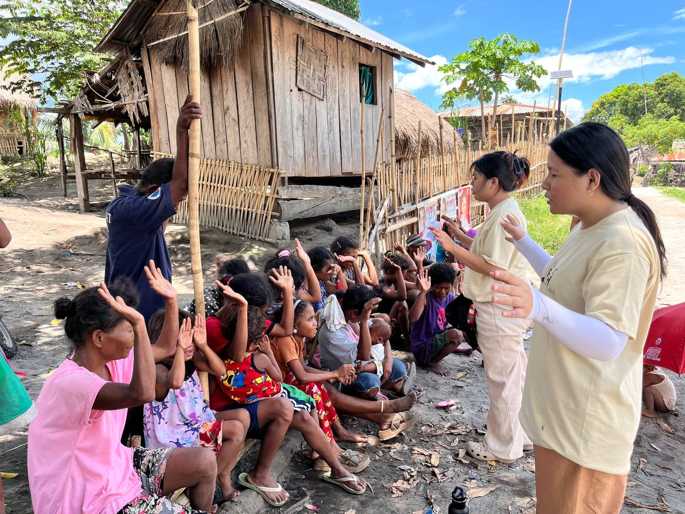

Bachelor of Arts in Theology
Build a Strong Foundation for Ministry, Leadership, and Service
A Calling with Purpose and Direction
The Bachelor of Arts in Theology at Philippine International College prepares students for a life of meaningful service. This program is designed for those who want to deepen their understanding of Scripture, strengthen their spiritual formation, and develop the skills needed for Christian leadership and ministry.

Comprehensive Biblical and Theological Training
Students gain solid academic and practical preparation through subjects such as:
- Biblical Studies
- Systematic Theology
- Church History
- Christian Ethics
- Pastoral Ministry
- Missions and Evangelism
- Christian Education
- Leadership Development
Our curriculum equips future pastors, church workers, educators, missionaries, and ministry leaders with the knowledge and character needed to serve effectively.

Hands-On Ministry Experience
Students are trained not only in the classroom but also through actual ministry exposure, church involvement, outreach activities, and leadership training. This helps them grow spiritually and discover their calling while gaining real-world experience.

Local and International Opportunities
Graduates can pursue careers in:
- Pastoral and ministry leadership
- Mission work
- Church administration
- Christian education and teaching
- Worship and music ministry
- Chaplaincy
- NGO and community development
- Graduate studies in theology or ministry

Eligible to Take the LET (Licensure Examination for Teachers)
Graduates of the BA in Theology program may pursue a teaching career. With the appropriate Professional Education units, they can qualify to take the LET, opening opportunities to become licensed professional teachers in Christian schools, private institutions, and various educational ministries.

Lead with Faith. Serve with Purpose. Teach with Passion.
If you feel called to serve, teach, and lead, the Bachelor of Arts in Theology at PIC provides the foundation you need for a life of impact.